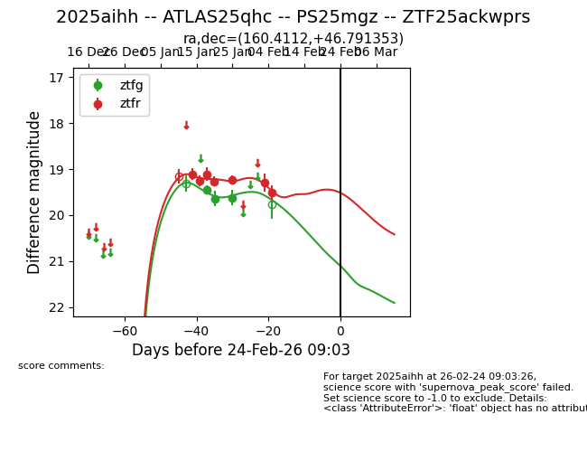
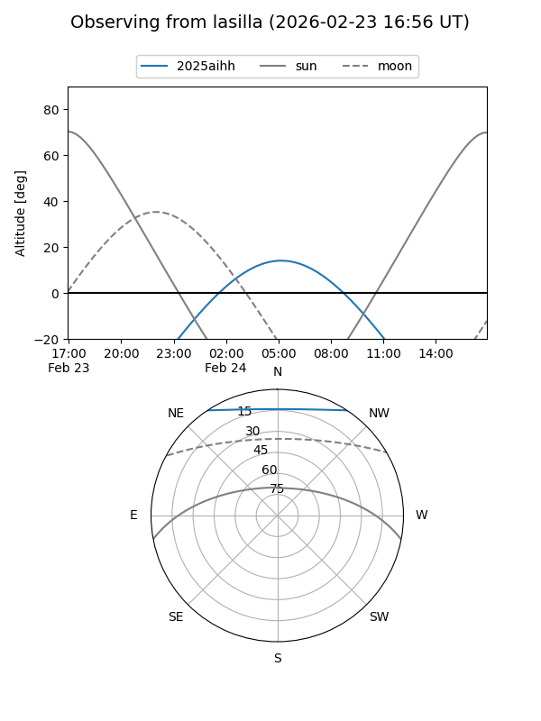
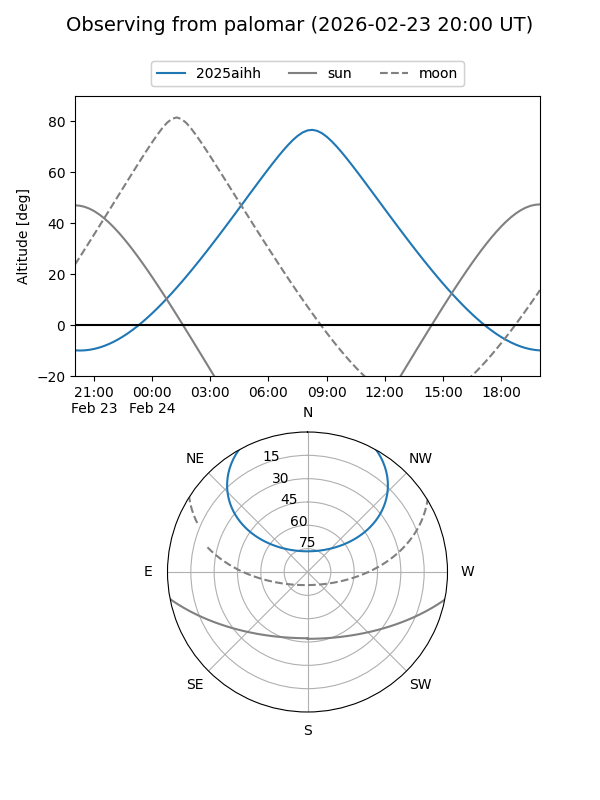
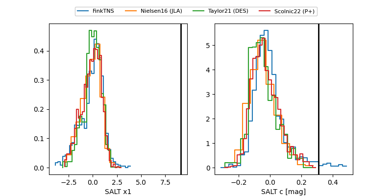

2025aihh
Target 2025aihh at 2026-01-25 09:01
Aliases and brokers:
FINK: link
Lasair: link
ALeRCE: link
TNS: link
YSE: link
alt names
ZTF25ackwprs (ztf,fink_ztf)
2025aihh (tns,yse)
ATLAS25qhc (atlas)
PS25mgz (panstarrs)
Coordinates:
equatorial (ra, dec) = 160.4112,+46.79135
equatorial (HMS+DMS) = 10:41:38.69,+46:47:28.87
galactic (l, b) = (166.5705,+57.83899)
Flags:
Photometry:
last ztfg=19.64, ztfr=19.23
2 ztfg, 5 ztfr detections
Lightcurve

Visibility


Additional plots
